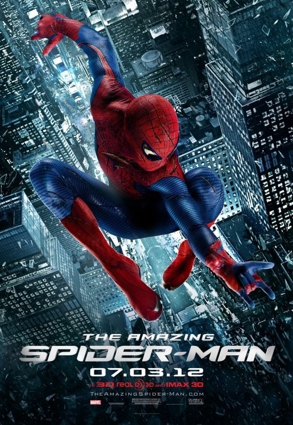
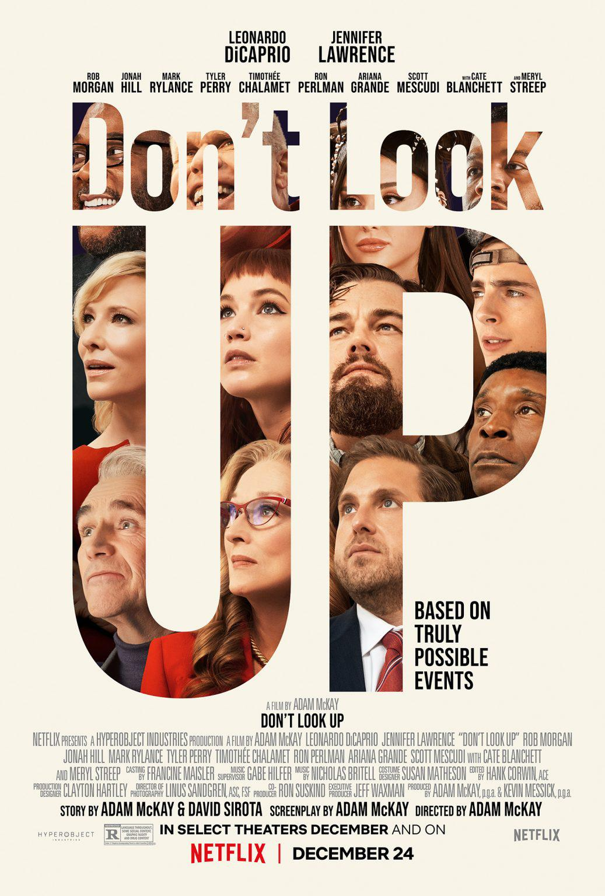

|  |
O Plano Perfeito (2006) |
Não recomendado para menores de 14 anos |
Quatro pessoas vestidas com uniformes de pintor entram no movimentado banco Manhattan Trust. Em poucos minutos elas controlam o local, para a realização de um assalto planejado em detalhes. Após a notícia do assalto ser divulgada chegam ao local os detetives Keith Frazier (Denzel Washington) e Bill Mitchell (Chiwetel Ejiofor), que têm a missão de fazer contato com o líder dos bandidos, Dalton Russell (Clive Owen). Os detetives trabalham com o auxílio do capitão John Darius (Willem Dafoe) e esperam que a situação seja resolvida rapidamente. Porém eles não contavam com a frieza e inteligência de Russell, que parece estar sempre um passo à frente das ações da polícia. Quando a capacidade de Frazier começa a ser posta em dúvida surge Madeline White (Jodie Foster), uma poderosa jogadora que solicita um encontro particular com Russell. |
Spike Lee |
03/12/2021 |
|  |
Anônimo (2021) |
Não recomendado para menores de 18 anos |
Mansell é um pacato pai e marido que sempre arca com as injustiças da vida, sem revidar. Quando dois ladrões invadem sua casa, Hutch se recusa a defender a si mesmo e sua família na esperança de evitar qualquer violência, desapontando seus familiares com sua passividade. As consequências do incidente acabam despertando uma raiva latente nele, desencadeando instintos adormecidos e impulsionando-o em um caminho brutal. |
Ilya Naishuller |
05/12/2021 |